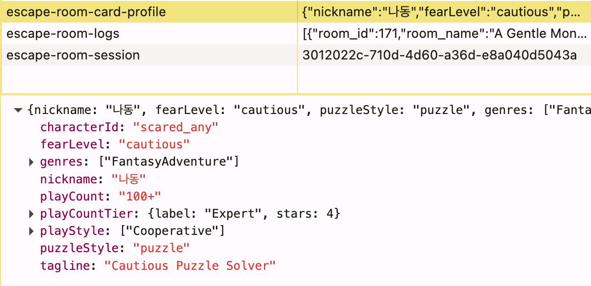
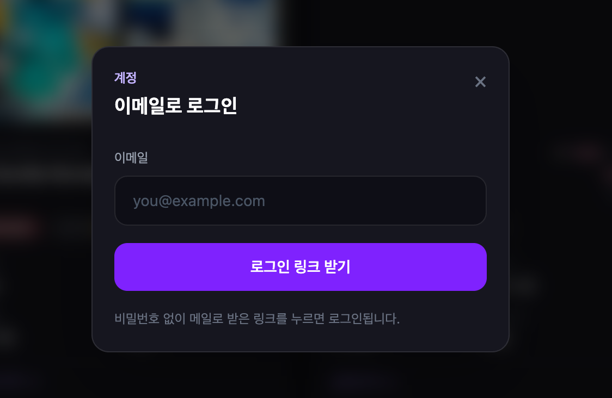
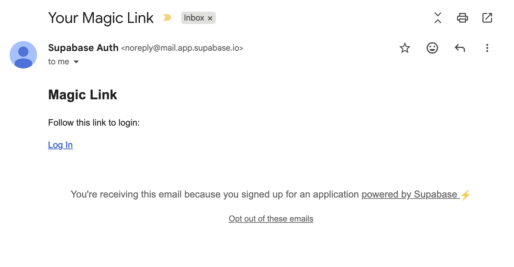
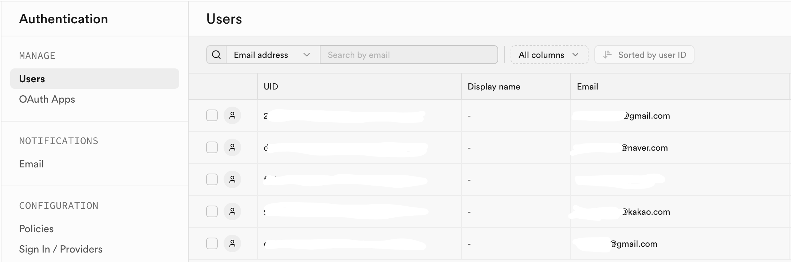
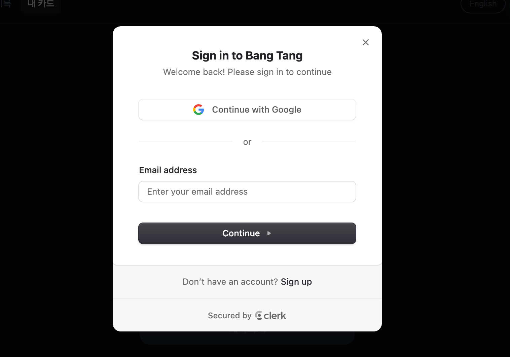
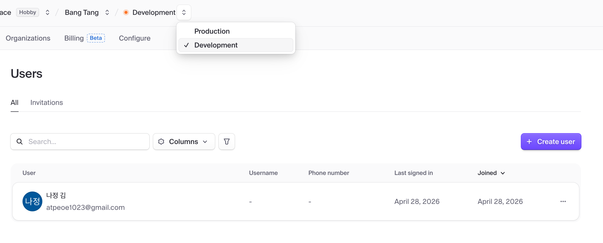

기술 발표
방탈출 카드 프로젝트에서 인증이 어떻게 진화했는가
localStorage → Supabase Auth → Supabase + Clerk
실제 로그인이 없다. 앱 최초 실행 시 브라우저에 랜덤 UUID를 생성해 저장하고, 이것을 익명 세션 ID로 활용한다. 서버도, 계정도 없다.
const SESSION_KEY = 'escape-room-session'
/** 앱 최초 실행 시 생성되는 익명 UUID */
export function getSessionId(): string {
let id = localStorage.getItem(SESSION_KEY)
if (!id) {
id = crypto.randomUUID()
localStorage.setItem(SESSION_KEY, id)
}
return id
}
개선 이유
이메일을 입력하면 로그인 링크가 발송되고, 클릭하는 순간 로그인된다 (OTP). Supabase 하나로 인증과 DB를 함께 관리한다.
// 이메일 OTP 로그인 전송
async function sendMagicLink(e: FormEvent) {
e.preventDefault()
const { error } = await supabase.auth.signInWithOtp({
email: email.trim(),
options: {
emailRedirectTo: window.location.origin,
shouldCreateUser: true,
},
})
if (error) { setStatus('error'); return }
setStatus('sent') // "메일함에서 링크를 확인해 주세요"
}
// 세션 감지 → 로그인 성공 시 모달 닫기
supabase.auth.onAuthStateChange((_event, session) => {
setSession(session)
if (session) setOpen(false)
})


개선 이유
Clerk가 인증(UI 포함)을, Supabase가 데이터를 담당한다. Clerk에서 발급된 JWT를 Supabase에 전달해 RLS 정책이 그대로 작동한다.
// auth.tsx — Clerk JWT를 Supabase에 주입
function ClerkAuthSync({ children }) {
const { isLoaded, getToken } = useClerkAuth()
useEffect(() => {
if (!isLoaded) return
setSupabaseAccessTokenGetter(async () => {
const token = await getToken() // Clerk JWT
return token ?? null
})
}, [isLoaded, getToken])
return <>{children}</>
}
// supabaseClient.ts — 요청마다 토큰 자동 포함
export const supabase = createClient(url, anonKey, {
accessToken: async () =>
accessTokenGetter ? accessTokenGetter() : null,
})

각 단계의 핵심 차이 한눈에 보기
| Stage 1 localStorage |
Stage 2 Supabase Auth |
Stage 3 Clerk + Supabase |
|
|---|---|---|---|
| 사용자 계정 | ✕ 없음 | ✓ 있음 | ✓ 있음 |
| 기기 간 동기화 | ✕ 불가 | ✓ 가능 | ✓ 가능 |
| 소셜 로그인 | ✕ 없음 | ✕ 직접 구현 | ✓ 기본 제공 |
| 로그인 UI | 불필요 | 직접 구현 | ✓ Clerk 제공 |
| 구현 복잡도 | ✓ 매우 낮음 | 중간 | 낮음 (설정 중심) |
| 외부 서비스 의존 | ✓ 없음 | Supabase | Clerk + Supabase |